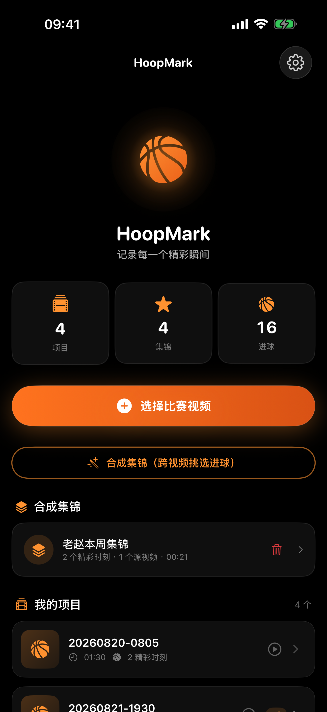
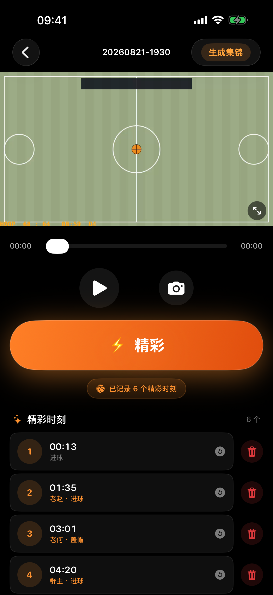
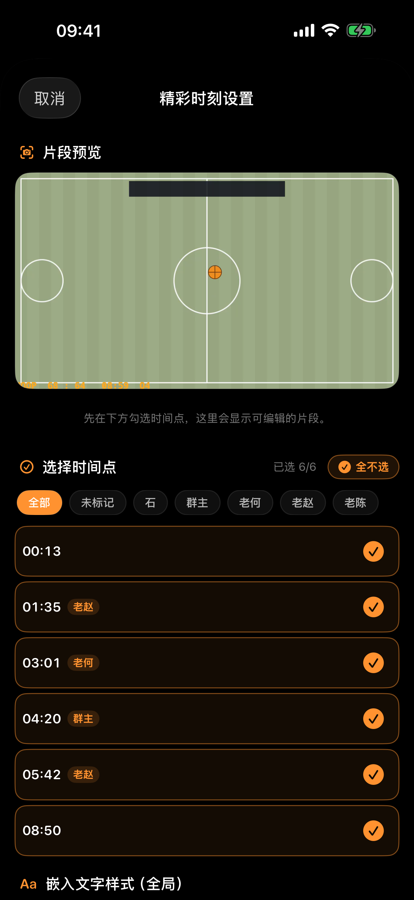
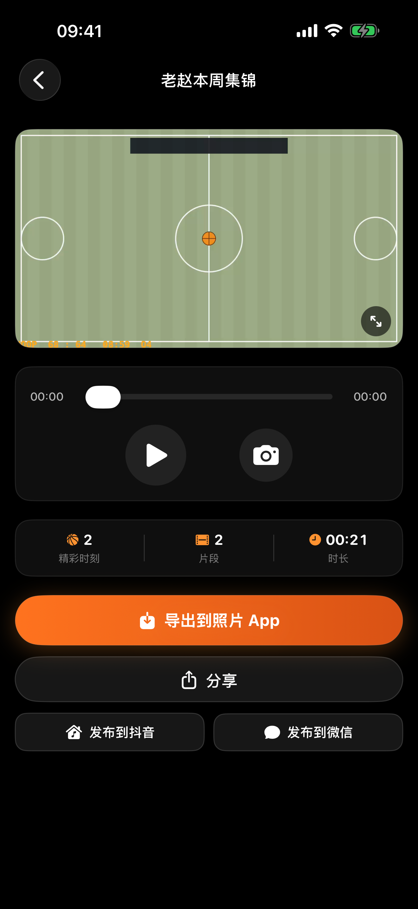
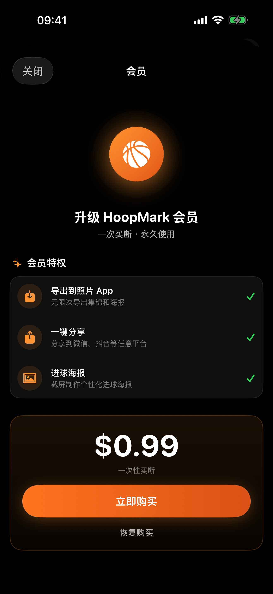

HoopMark 是一款本地运行的篮球视频打点剪辑工具：看比赛时点一下「⚡精彩」记录进球，赛后自动按前后秒数截取合并成集锦。所有处理在你的 iPhone 上完成，无需联网、无需账号。





如有问题、反馈或需要技术协助，请通过邮件联系我们，我们会在合理时间内回复。
问：App 需要哪些权限？分别用来做什么？
答：① 照片库读取——用于选择比赛视频，并读取拍摄时间作为项目名；② 添加到照片——用于把生成的集锦保存到相册；③ 媒体与 Apple Music（部分系统显示）——播放视频声音所需。所有视频处理均在本地完成，不上传任何数据。
问：免费版和会员有什么区别？
答：安装后可免费使用 7 次「导出到照片 / 分享 / 制作海报」。升级会员（一次买断，非订阅）后不限次数，并支持在所有设备恢复购买。
问：重新安装 App 后，打点记录还在吗？
答：在。打点、球员标记、片段文字会自动备份到你的 iCloud（仅限同一设备产生的数据，不会混入其他设备）。重装后打开 App 即自动恢复；源视频需重新从相册导入。
问：视频文件会上传到云端吗？
答：不会。视频始终留在你的设备上，剪辑全部本地完成。iCloud 只同步轻量的记录数据（打点时间、球员标签等）。
问：长视频生成集锦要多久？支持什么格式？
答：取决于片段数量和时长，通常每个片段几秒到十几秒。支持 iPhone 相册中的常见格式（HEVC / H.264，MOV / MP4），竖屏横屏均可正确处理。
问：恢复购买怎么做？
答：设置 → 会员 → 恢复购买。使用同一 Apple ID 即可，无需再次付费。
问：可以给不同球员做个人集锦吗？
答：可以。打点时长按「⚡精彩」选择球员；生成集锦时按球员筛选，即可一键生成单人集锦；还支持跨多场比赛视频挑选精彩时刻，合成"某某本周集锦"。
① 导入比赛视频 → ② 播放中看到精彩镜头点「⚡精彩」（长按可选球员，全屏模式双击快标）→ ③ 比赛结束点右上角「生成集锦」，可勾选时间点、按球员筛选、设置嵌入文字 → ④ 生成后导出到照片或分享到微信/抖音。
版本记录
1.0.0 —— 首个版本：打点、球员标记、集锦生成、按片段嵌入文字、跨视频合成、iCloud 记录备份。
最后更新：2026年8月22日